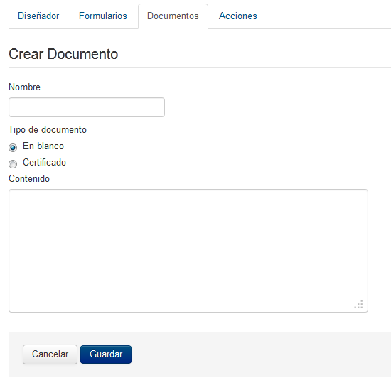
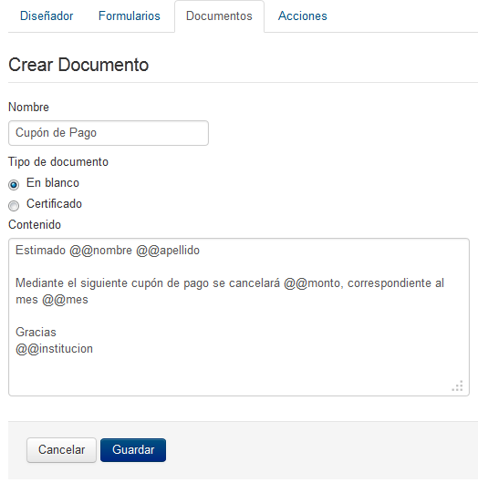
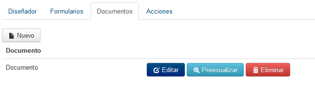
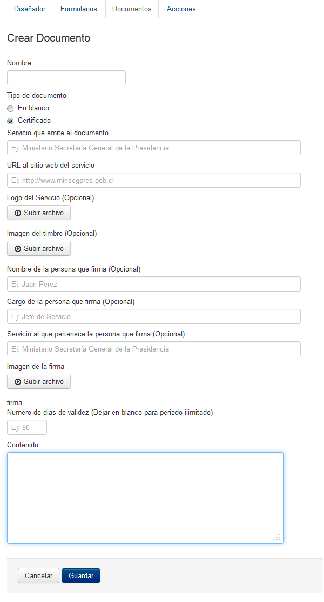

1.1.1 Generación de Documentos del proceso
Simple tiene la capacidad de generar documentos para la entrega de información existiendo dos tipos: en blanco y certificados, este último con un formato preestablecido permitiendo ademas el uso de firma eletronica avanzada.
Documento en blanco
Es el tipo de documento más basico el cual posee un único campo de edición, destacando entre sus cualidades el uso de variables y aplicar formato al documento con código HTML. Si su Modelo de Procesos requiere del diseño de documentos informales es recomendable iniciar por esta etapa, ya que cada documento deberá ser asociado a un formulario posteriormente.
Para ingresar al menú de generación y gestión de documentos, deberá presionar sobre el botón Documentos, indicado en el recuadro en rojo siguiente:

Figura 21: "Ventana de gestión de Documentos"
El marco de trabajo para gestionar los documentos, permitirá realizar las opciones típicas de un mantenedor, siendo las siguientes:
- Botón Nuevo :
- Permite generar un nuevo documento en Simple. Al presionar sobre el botón ingresará a la ventana para generar documentos dentro de Simple como se visualiza en la siguiente imagen:

Figura 22: "Diseño de Nuevo Documento"
En donde:
- Nombre: Corresponde al nombre del documento a generar.
- Tipo de documento: Corresponde al tipo de documento a crear, existiendo en blanco y certificado.
- Contenido: es el contenido que desea que desea tenga el documento, recordar que en esta sección podrá utilizar variables, como también formatear el documento codificando en HTML. En cuanto a la codificación en HTML va más allá del presente manual, por lo que se recomienda alguna guía práctica en internet.
Ya que el manual tiene como fin, ejemplificar la solicitud de cupones de pago para afiliados a CPA, la estructura del documento básico sería el siguiente:

Figura 23: "Edición de nuevo Documento para CPA"
- Botón Editar :
- Permite modificar un reporte existente en Simple, abriendo el asistente de reportes de Simple, con esta opción podrá cambiar el nombre del reporte, añadir o quitar campos, del reporte seleccionado sobre el listado de reportes.

Figura 24: "Ventana de Gestión de Documentos - Editar"
Y posteriormente se desplegará el asistente de reporte, con la información original precargada:
Figura 25: "Ventana de Edición de Documento Existente"
Una vez modificados los campos, simplemente presione el botón Guardar y el documento habrá quedado correctamente almacenado y disponibilizado para su uso en las tareas del modelo de procesos.
- Botón Eliminar :
- Permite eliminar un documento existente en Simple, para esto haga clic sobre la fila con el documento a eliminar y pulse el botón Eliminar, luego tendrá que confirmar la acción, tenga precaución ya que esta operación no es reversible.
Figura 26: "Ventana de Gestión de Documentos - Eliminar"
- Botón Previsualizar :
- Permite visualizar un Documento realizado en el sistema, esta funcionalidad es para revisar si el formato del documento y la estructura, está de acuerdo a lo que se espera.
Documento Certificado
Corresponde a documentos con un formato pre-establecido para elaboración de certificados, ya sea con firma electrónica simple o avanzada. La creación, edición, previsualización y eliminación de este tipo de documentos se realiza de la misma manera que en los documentos en blanco a diferencia de los campos extras que a continuación se detallan:
- Nombre
- Servicio que emite el documento
- URL al sitio web del servicio
- Logo del Servicio (Opcional)
- Imagen del timbre (Opcional)
- Nombre de la persona que firma (Opcional)
- Cargo de la persona que firma (Opcional)
- Servicio al que pertenece la persona que firma (Opcional)
- Imagen de la firma
- Numero de dias de validez (Dejar en blanco para periodo ilimitado)
- Contenido

Figura 27: "Diseño de Nuevo Documento tipo certificado"